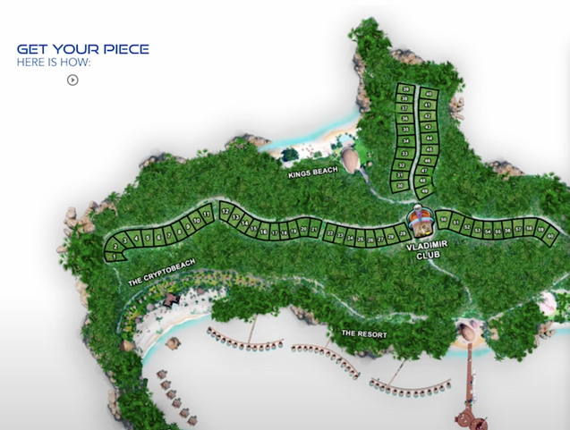
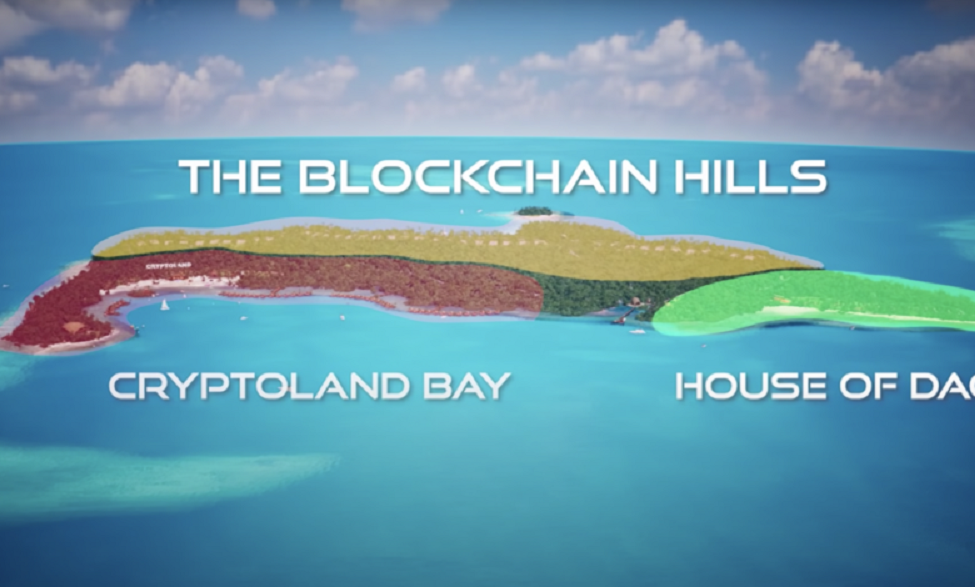
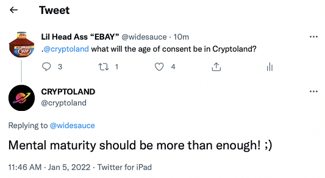

Cryptoland
Cryptoland is advertised as “the world's first private crypto island designed to enjoy a first-class crypto lifestyle”. An international hub to live, work and relax. Founded by Max Oliver and Helena Lopez, Cryptoland aims to buy a real Fiji Island and make it a holiday destination, with Hotels, restaurants etc., for he “Crypto enthusiasts” to visit.
How is this Possible? The plan is to sell NFTs to people and the owners of their NFT collection will be able to visit the island , each NFT (which costs around 1m$) grands the owner access to an acre of land on the island. At the start of the project, the people were really excited and supported the team behind it, but the team started to make so bad choices which will eventually lead to their downfall.
 Pictures of the island and the plan
The lies and Criticism
The project was managed by the founders, had been working on the project for over a year before it got announced to the public. The announcement came in the form of a promotional animation video uploaded to YouTube and the making of their website (www.cryptoland.is) in which they included their roadmap, their plans and how will they succeed on making this project a reality. People started look more into it, and grabbed the attention of many skeptical minds, which weren’t so sure if that was possible.
The problem with Cryptoland was that they had nothing ready for them to buy the island, they didn’t even know if that specific island they were aiming for was for sale at all. Their promotional video, had stolen assets by other artists, without their consent, and people that tried to criticize them for this, got blocked by them on Twitter. Others on Twitter had questions about the project, and they either got ignored, or to questions they didn’t like because they “harassed” them, the users got blocked as well. Their linked in page included people that weren’t part of the project at all, lying about them working together. All these little cracks started to show and people were starting to question if this is real.
The ”age of consent” Incident
What really made Cryptoland popular, was the “age of consent” incident. On January 5th 2022, Twitter user @widesauce asked the Cryptoland Twitter account a question, “What will the age of consent be in Cryptoland?” and Cryptoland answered “Mental maturity should be more than enough! ;)”. This raised a ot of eyebrows to the public, mostly because of the “;)”. People thought that it had a more “different” meaning, and people started to compare it to some other types of islands.
Aftermath
Cryptoland, had some premise, not many people were calling it a scam, but after they couldn’t take criticism and started banning and blocking people on their community for no reason, people started to be less into it and some started being against it calling them out to be a scam.Cryptoland didn’t own the island to begin with, they didn’t have the capital to purchase the island at all, the promised that their NFTs represented an acre of land on the island, without even owning the island to begin with. Cryptoland has stopped giving any updates since early April of 2022, and nothing is happening, their NFTs have dropped without giving any care, their website doesn’t even function properly no more.
I loved the Cryptoland project, not because I believed on it, but because I found it hilarious, their promotional video was hilarious and made for some amazing memes, Youtubers made amazing videos about them, criticizing them and making fun of them, while the Cryptoland community was defending them and they seemed like everything that they made was satire while it wasn’t. it was a good time while they were around and I’ll definitely miss them.